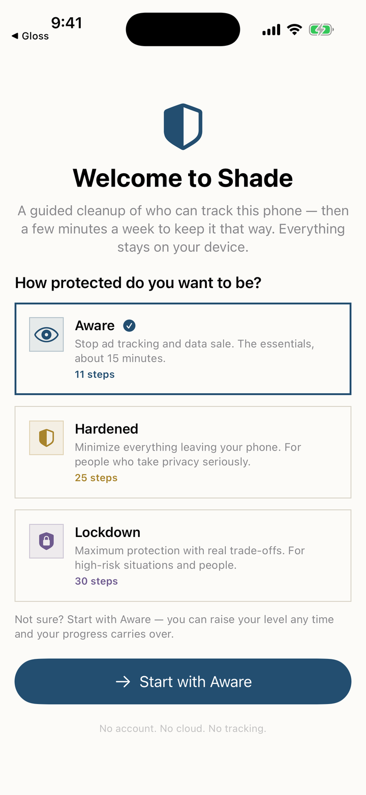

Understand it, then act.
Three tabs — Status, Vault, and VPN — and a Primer that explains the rest. Everything runs on the device; Shade keeps no account and collects nothing.
Status is a live read of how exposed you are right now — the signals your phone is broadcasting and a shield level you set from Basic to Lockdown — over a guided device-hardening checkup. Each step explains why it matters and gives the exact path in iOS Settings, because Apple does not let apps flip these switches for you, and an app that claims otherwise is lying to you. Volatile settings re-check weekly, so the picture stays honest instead of going stale. The Vault encrypts sensitive files and notes on the device behind Face ID — never synced, never uploaded; share them encrypted by exchanging a Shade ID, or export plainly with a clear warning. For SDIT members, a self-hosted WireGuard VPN routes traffic with no logs — the server records only how much data you use, to catch abuse. And the Primer lays out, plainly, how phones are actually tracked — being hacked versus being tracked, the identifiers your SIM broadcasts, how location is correlated and sold — what genuinely helps, and how to verify Shade itself.
